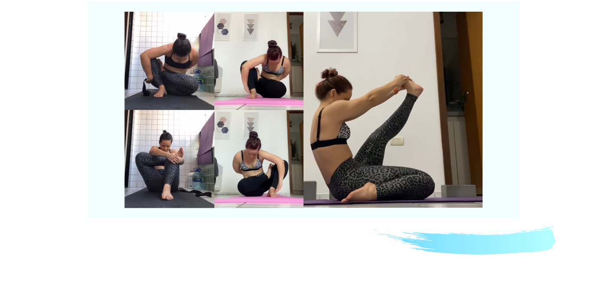
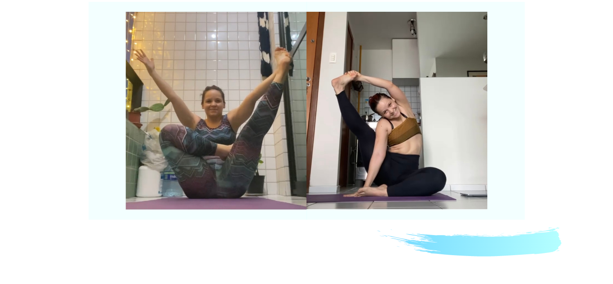

Home
Inversions
Seated Poses
Balancing Poses
Strength Poses
Backbends
Stretching Poses
Yogi See Yogi Do
Expectation vs Reality
Pranayamas
Mudras
Yoga with Friends
Yoga Practices
Instagram Page
Contact Me
Seated Poses
Marichyasana B
Krounchasana

Upavistha Konasana Variation
Parivrtta Surya Yantrasana

For more seated poses visit my Instagram Page.